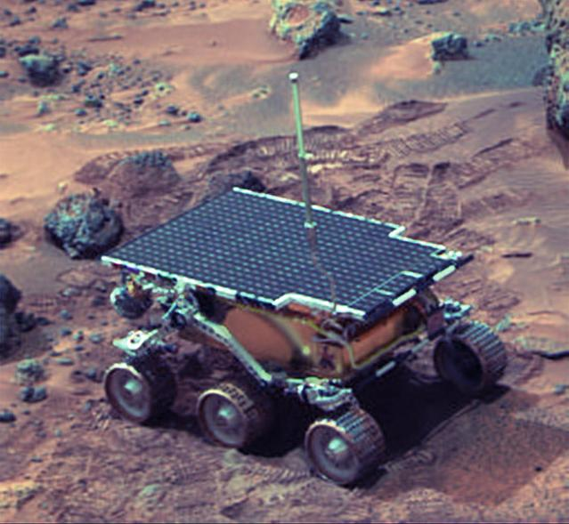
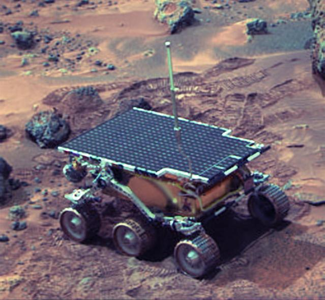
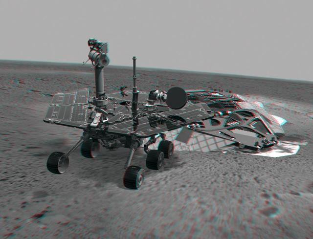
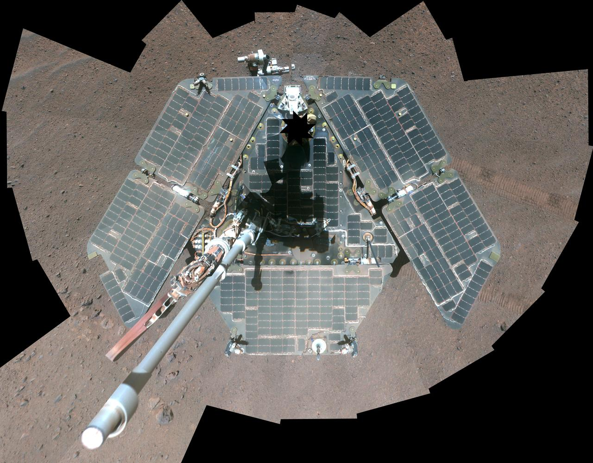
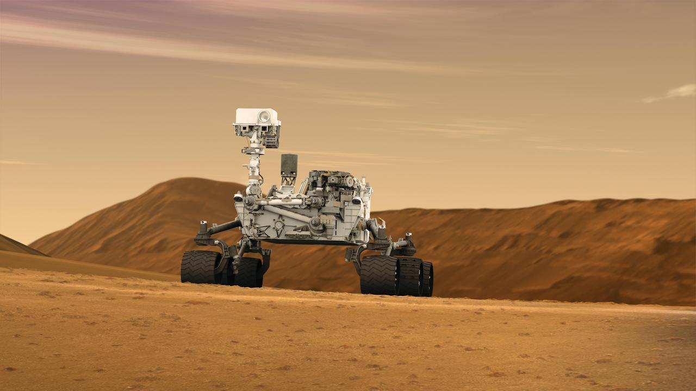
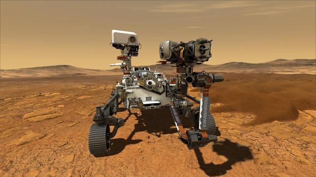

Sojourner – 1997
Launch: Dec 4, 1996
Landing: July 4, 1997
First successful Mars rover. Part of the Pathfinder mission, it analyzed rocks and demonstrated rover mobility.
Robotic Explorers on the Red Planet
Launch: Dec 4, 1996
Landing: July 4, 1997
First successful Mars rover. Part of the Pathfinder mission, it analyzed rocks and demonstrated rover mobility.
Launch: June 10, 2003
Landing: Jan 4, 2004
Explored Gusev Crater and discovered evidence of water activity. Operated for over 6 years.
Launch: July 7, 2003
Landing: Jan 25, 2004
Discovered clay minerals and drove over 28 miles—far surpassing mission expectations.
Launch: Nov 26, 2011
Landing: Aug 6, 2012
Still operational. Studied Mars' climate and geology and discovered organic compounds.
Launch: July 30, 2020
Landing: Feb 18, 2021
Searching for signs of ancient life and collecting samples to return to Earth in a future mission.
